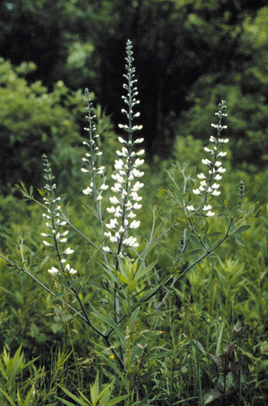
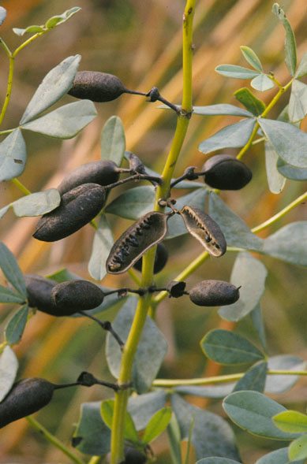
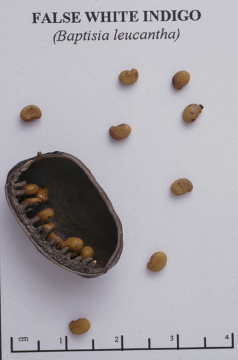
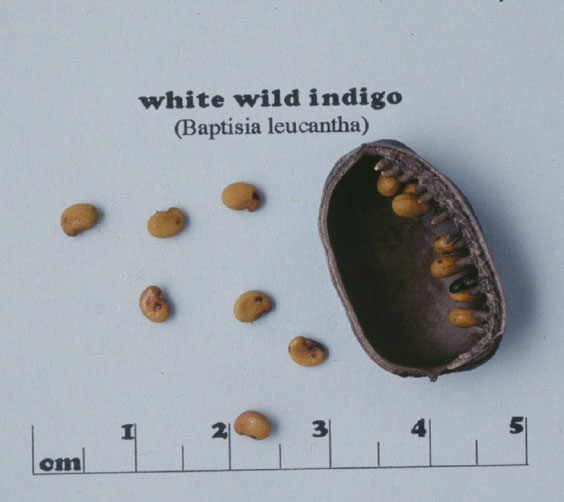

Baptisia lactea
Family: Fabaceae
White Wild Indigo
Swink/Wilhelm #8



FLOWERING: June - July
SEED TIMING: Mid-August through September
HABITAT: Mesic to dry prairies
DIAGNOSTIC FEATURES: 3 - 5 feet tall. Smooth, stout stem with widely branched crown like a mini-bush. Smooth leaves have small stipules, short petioles, and 3 leaflets. A tall, elegant, spike-like inflorescence is closely set with very large pale white pea flowers. Flowers later than B. Leucophaea.
TO PICK: Smooth, inflated legume pod is dark brownish-black. Pick whole pod. Remove seeds from pods to prevent further predation by larvae or weevils which may be inside pod.